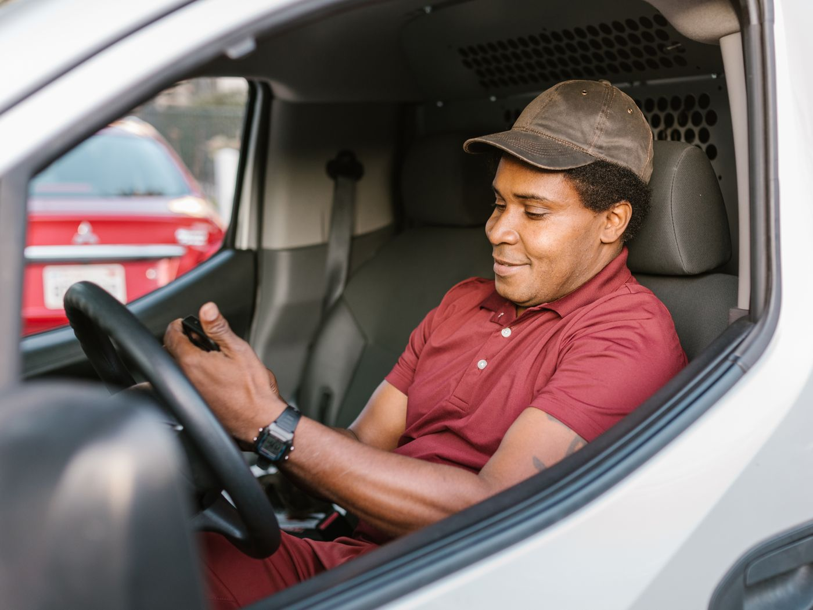

O motorista entrega. O app registra o resto.
A rota do dia chega no celular, na ordem certa. O motorista navega pelo Waze ou pelo Google Maps, registra a entrega com foto e segue para a próxima. Sem papel e sem ligação do escritório.


Feito para quem está dirigindo, não para quem está no escritório.
- A rota chega organizada no celular, na ordem das paradas.
- Um toque abre o Waze ou o Google Maps até o endereço.
- Funciona sem internet: o que for registrado sem sinal sobe quando a conexão volta.
- Roda em Android e iPhone, inclusive em aparelhos mais antigos.
Cada entrega comprovada em poucos toques.
- Foto do canhoto tirada na hora, sem acesso à galeria, com local, data e hora gravados.
- Entregou tudo, uma parte ou voltou? O motorista marca item por item, com o motivo.
- Assinatura na tela, com nome e documento de quem recebeu, quando a operação pedir.
- Pix pelo QR Code na entrega, que só confirma quando o pagamento cai.
- Leitura do QR Code de cada volume para conferir a carga.
Imprevisto não trava a rota.
Cliente fechado
O motorista marca "voltar depois" e segue a rota. A logística ou a expedição fica sabendo na hora.
Coleta no meio do caminho
Uma nova parada entra na rota em andamento, sem precisar refazer tudo.
Quilometragem com foto
Foto do painel na saída e na chegada, para conferir o quilômetro rodado.
Checklist e formulários
Checklist do veículo e formulários sob medida, como o de recolhimento de produto vencido.
Perguntas sobre o app do motorista
Precisa de celular novo?
Não. O app roda em Android e iPhone, inclusive em aparelhos mais antigos.
E se o motorista ficar sem sinal?
O app funciona offline. As entregas registradas sem sinal sobem para o sistema assim que a conexão volta.
O motorista é obrigado a seguir a ordem da rota?
Não. Se ele pular uma parada, a logística ou a expedição é avisada, e o painel mostra a sequência prevista e a realizada.
O app acompanha o motorista fora do expediente?
Não. A localização é acompanhada só durante a rota. Isso vale também para motoristas agregados.
Coloque o app na mão dos seus motoristas.
No teste gratuito, alguns dos seus motoristas usam o app em entregas de verdade. Você vê a diferença antes de decidir.
Agendar demonstração